În stînga este slide-ul din curs, în dreapta aceeași figură sau același tabel, calculat în browser din aceleași date. Butonul ▶ modifică parametrul pas cu pas; tabelele și exemplele lucrate se recalculează odată cu el. Abrevieri: FMH (fractal market hypothesis, ipoteza pieței fractale), R/S (rescaled range, amplitudinea rescalată), DFA (detrended fluctuation analysis, analiza fluctuațiilor fără tendință), GPH (estimatorul Geweke–Porter-Hudak), fBm (fractional Brownian motion, mișcarea browniană fracționară), fGn (fractional Gaussian noise, zgomotul gaussian fracționar), ARFIMA (autoregressive fractionally integrated moving average), ACF (autocorrelation function, funcția de autocorelație), AR(1) (model autoregresiv de ordinul 1), GARCH (generalised autoregressive conditional heteroskedasticity), OLS (ordinary least squares, metoda celor mai mici pătrate), SE (standard error, eroarea standard), i.i.d. (independente și identic distribuite), VaR (value at risk, valoarea expusă la risc), TLV (Banca Transilvania), SNP (OMV Petrom).
Autosimilaritate și fractali · Hurst, Nilul și statistica R/S · Memoria lungă: definiții și modele · Estimatori ai memoriei lungi · Memorie lungă aparentă · Memoria lungă a volatilității · Exponenți Hurst pe ferestre mobile · Memoria lungă și riscul
Autosimilaritate și fractali
Dimensiunea fractală
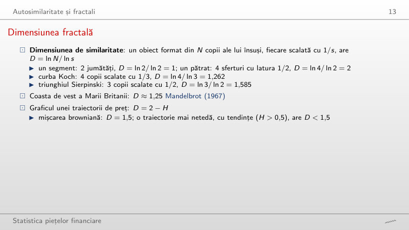
Exemplu lucrat: dimensiunea prin numărarea cutiilor (calcul suplimentar)
Răspuns
Circa 1,5: panta este 1,47 cu ε de la 1/2 la 1/128, aproape de D = 2 − H = 1,5. Traiectoria este o curbă, dar atît de neregulată încît numărul de cutii crește ca ε^(−1,5), nu ca ε^(−1). Pentru H = 0,1 numărarea dă doar 1,74 în loc de 1,9: cu 1000 de puncte, neregularitatea de sub pasul de timp nu se vede, deci D este subestimat la traiectoriile foarte neregulate.
Scalarea randamentelor pe h zile
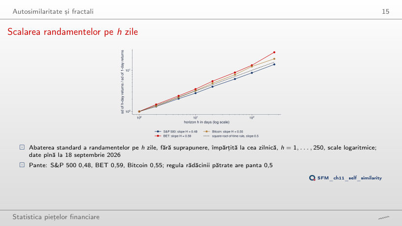
Răspuns
Sub: 2,80. Randamentele zilnice ale S&P 500 au autocorelația de ordinul 1 negativă, −0,099, deci zilele succesive se compensează parțial (ușoară revenire la medie). BET are 3,50, peste √10 (autocorelație pozitivă), iar Bitcoin 3,20, aproape de √10.
Hurst, Nilul și statistica R/S
Exemplu rezolvat: R/S pentru opt randamente
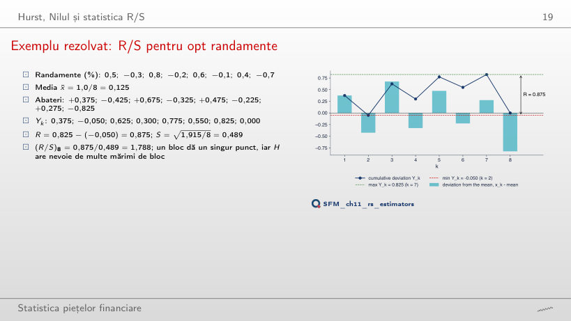
Exemplu lucrat: R/S pentru un bloc
Răspuns
Este de același ordin: 1,530. R și S cresc împreună cu volatilitatea, deci raportul nu are unitate de măsură; pentru 8 valori R/S rămîne între circa 1,5 și 2,8 (2,317 în ianuarie 2000, 2,774 în octombrie 2008, 2,155 în septembrie 2026). Împărțirea la S face statistica comparabilă între active.
De la R/S la exponentul Hurst
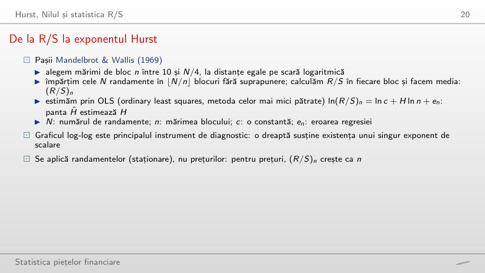
Exemplu lucrat: panta graficului log-log
Răspuns
Circa 0,86 (0,861), mult peste banda i.i.d. [0,51; 0,57]: memorie lungă a volatilității. Pentru randamente, 0,530 se află în bandă, deoarece R/S este deplasat în sus în eșantioane mici.
Memoria lungă: definiții și modele
Exemplu rezolvat: cît de repede se stinge memoria?
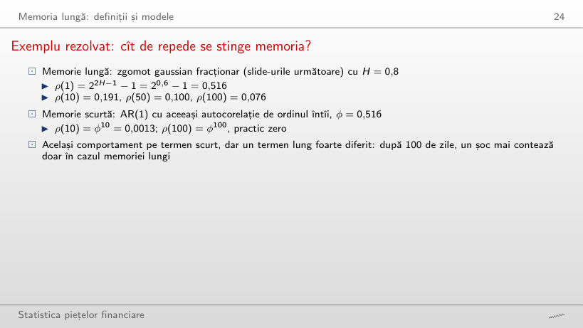
Exemplu lucrat: fGn față de AR(1)
Răspuns
Crește de la circa 0,001 (H = 0,55) la circa 0,54 (H = 0,95); la H = 0,8 este 0,076. Pentru H mare, ρ(k) scade ca k^(2H − 2), adică foarte încet. AR(1) cu același ρ(1) are ρ(100) practic 0 pentru orice H: scăderea lui este geometrică.
Traiectorii fBm pentru trei exponenți Hurst
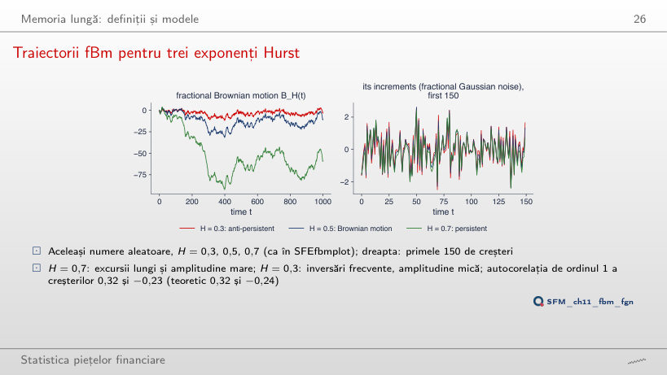
Răspuns
Teoretic 2^(2H − 1) − 1 = 2^0,4 − 1 = 0,32; pe cele 1000 de creșteri simulate, 0,32 (0,316). Pentru H = 0,3: −0,23 pe date, −0,24 teoretic. H nu este o autocorelație și nici o probabilitate.
ACF a zgomotului gaussian fracționar
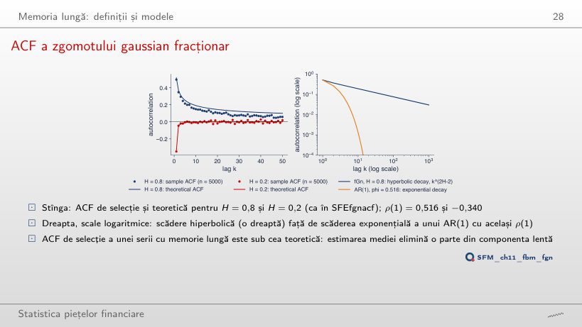
Răspuns
Estimarea mediei elimină o parte din componenta lentă a seriei: cu memorie lungă, media de selecție urmează valurile lungi, iar abaterile de la ea sînt mai puțin corelate. Pe lagurile 1–50, ACF de selecție este în medie cu 0,040 sub cea teoretică. Simularea prin scufundare circulantă este exactă, iar formula ACF a fGn este exactă la orice lag.
ARFIMA(0,d,0) cu d = 0,4 și d = -0,4
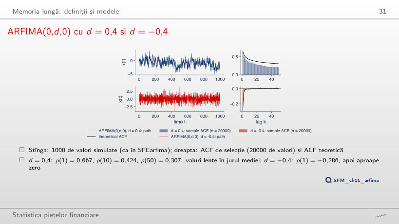
Răspuns
0,307: scăderea hiperbolică păstrează mult din ρ(1), de aceea seria face valuri lente în jurul mediei. Un AR(1) cu φ = 0,667 ar avea ρ(50) = 0,667⁵⁰, practic 0. Cu d = 0,1, ρ(50) este doar 0,005.
Exemplu rezolvat: ARFIMA(0; 0,3; 0)
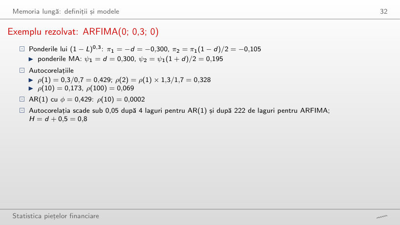
Exemplu lucrat: ponderile și autocorelațiile ARFIMA(0,d,0)
Răspuns
După 222 de laguri; un AR(1) cu același ρ(1) = 0,429 scade sub 0,05 după 4 laguri. ρ(k) tinde totuși la 0 (staționaritate, d < 0,5), doar foarte încet: ρ(100) = 0,069.
Estimatori ai memoriei lungi
Analiza fluctuațiilor fără tendință (DFA)
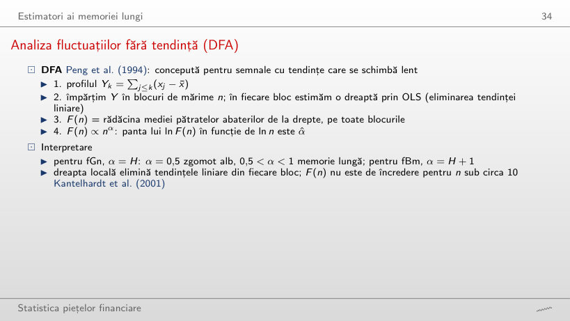
Exemplu lucrat: fluctuația F(n)
Răspuns
Crește de circa 13 ori (de la 0,935 la 12,37), aproape cît √(1678/10) = 13,0, deoarece α̂ = 0,49 ≈ 0,5. Pentru |r| crește de circa 100 de ori: α̂ = 0,95. F(n) crește proporțional cu n doar pentru un profil cu tendință (fBm are α = H + 1).
R/S și DFA: S&P 500 din 2000
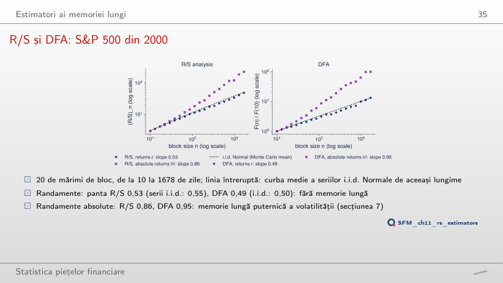
Răspuns
Nu: seriile i.i.d. Normale de aceeași lungime dau în medie panta 0,55, pentru că R/S este deplasat în sus în eșantioane mici. DFA dă 0,49, față de 0,50 pentru seriile i.i.d. Randamentele absolute au R/S 0,86 și DFA 0,95: memoria lungă este în volatilitate.
Regresia GPH pe log-periodogramă
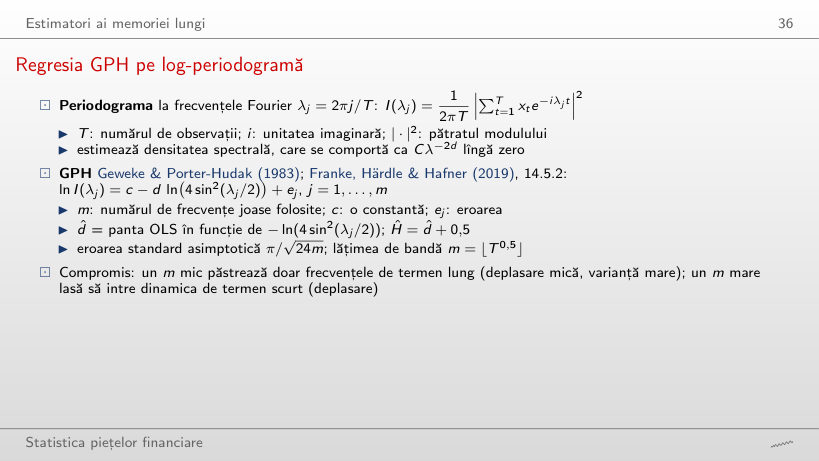
Exemplu lucrat: regresia GPH
Răspuns
Circa 0,28, de la −0,103 la 0,176, și conține 0: estimarea nu se separă de 0 prin acest test. Asta nu dovedește că d = 0, doar că datele sînt compatibile cu d = 0. Pentru |r|, intervalul este [0,33; 0,61].
GPH: randamentele și randamentele absolute S&P 500
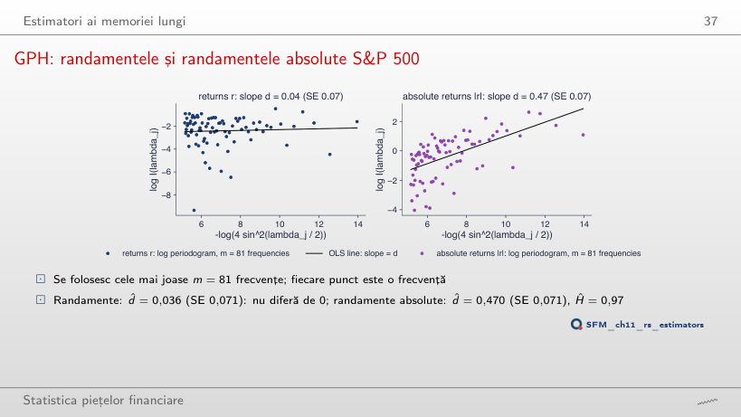
Răspuns
SE scade de la 0,071 la 0,029, iar d̂ crește de la 0,470 la 0,554: frecvențele mai mari aduc mai multă informație, dar și dinamica de termen scurt a volatilității. La m = 33 (T^0,4), d̂ = 0,364 cu SE 0,112.
Testul R/S modificat al lui Lo
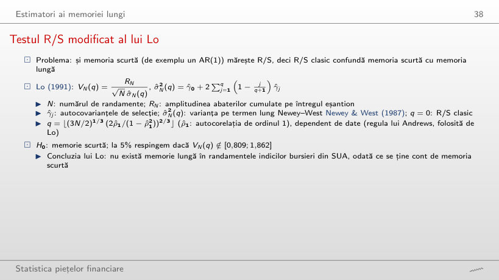
Exemplu lucrat: statistica V_N(q)
Testul lui Lo pe cele șase serii (la 5%: memoria scurtă este respinsă în afara [0,809; 1,862])
Răspuns
7: (3N/2)^(1/3) = 21,60 și (2|ρ̂₁|/(1 − ρ̂₁²))^(2/3) = 0,341, produsul 7,36. Corecția depinde de mărimea lui ρ̂₁, nu de semnul lui. Cu q = 7, V = 1,56 se află în [0,809; 1,862]; pentru |r|, q = 15 și V = 2,66: memoria scurtă este respinsă.
R/S clasic față de R/S modificat: mărimea și puterea testului
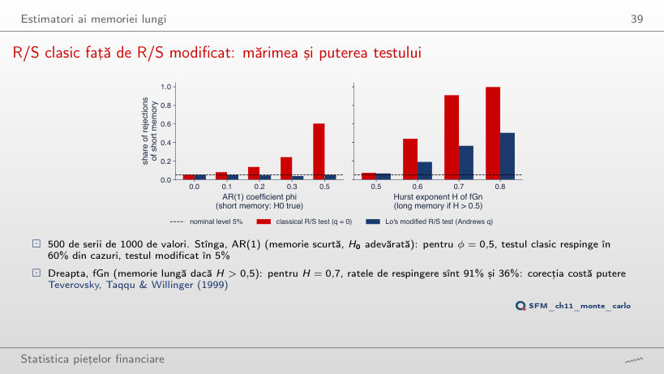
Răspuns
În 60% din cazuri; testul modificat al lui Lo, în 5%, cît este nivelul nominal. R/S clasic confundă memoria scurtă cu memoria lungă. Corecția costă putere: pentru fGn cu H = 0,7, ratele de respingere sînt 91% (clasic) și 36% (modificat).
Monte Carlo: deplasarea și dispersia estimatorilor
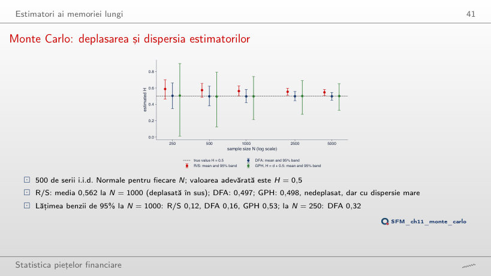
Răspuns
GPH: lățimea 0,53, față de 0,16 pentru DFA și 0,12 pentru R/S. GPH este practic nedeplasat (media 0,498), dar folosește doar m = 31 de frecvențe; R/S are banda cea mai îngustă, dar centrată la 0,562, nu la 0,5.
S&P 500: toți estimatorii
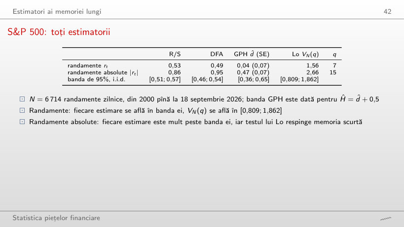
Toți estimatorii; benzile de 95% vin din 500 de serii i.i.d. de aceeași lungime (cu roșu: în afara benzii)
Răspuns
R/S, cu 0,53: banda lui i.i.d. pentru N = 6 714 este [0,51; 0,57], deci 0,53 se află în ea. DFA (0,49), GPH (Ĥ = 0,54, d̂ ± 1,96 SE = [−0,10; 0,18]) și testul lui Lo (V = 1,56) sînt toate compatibile cu absența memoriei lungi.
Memorie lungă aparentă
Nilul: R/S înainte și după eliminarea rupturii
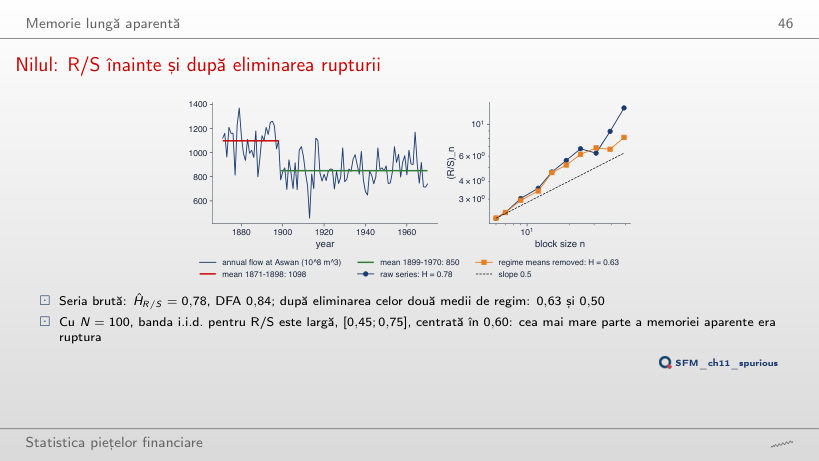
Răspuns
0,63, în banda i.i.d. [0,45; 0,75] pentru N = 100, centrată în 0,60; DFA scade de la 0,84 la 0,50. Cea mai mare parte a memoriei aparente era ruptura, nu persistența debitelor.
Memorie lungă aparentă în simulări
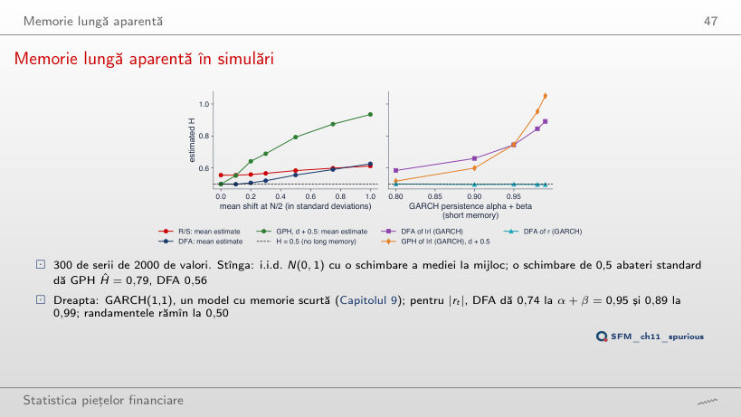
Răspuns
Circa 0,79 (DFA 0,56), deși seria nu are nicio memorie. Abaterea comună de la media generală face ca observațiile din același regim să pară corelate la toate lagurile. La N = 4000, GPH dă tot 0,79: memoria aparentă nu dispare cu mai multe date.
Memoria lungă a volatilității
S&P 500: ACF pentru rₜ, |rₜ| și rₜ²
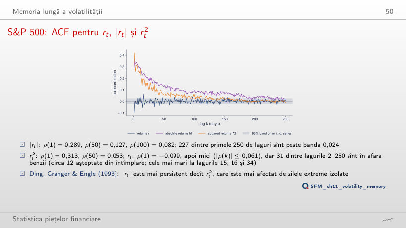
Răspuns
31, față de circa 12 așteptate din întîmplare (5% din 249); cele mai mari la lagurile 15, 16 și 34, toate sub 0,061 în valoare absolută. Banda 1,96/√n este o referință asimptotică pentru o serie i.i.d.; cu volatility clustering, autocorelațiile de selecție variază mai mult decît arată ea, deci depășirile nu dovedesc, singure, predictibilitatea.
Șase piețe: randamente și randamente absolute
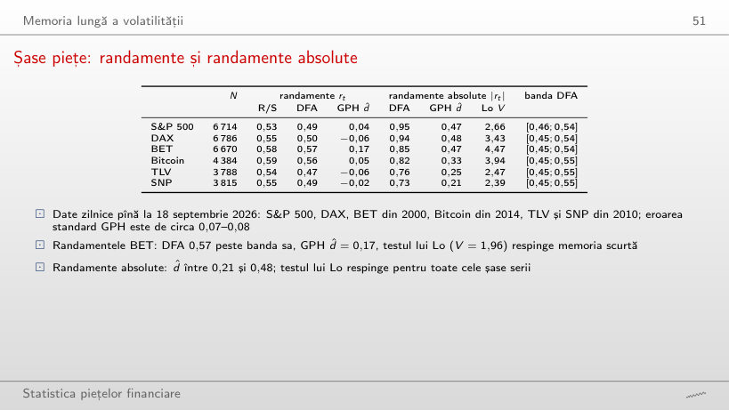
Șase piețe (cu roșu: DFA peste bandă, testul lui Lo respinge memoria scurtă)
Răspuns
Doar pentru BET: d̂ = 0,17, intervalul [0,03; 0,31]. Tot la BET, DFA (0,57) este peste bandă și testul lui Lo (V = 1,96) respinge memoria scurtă. Pentru |r|, d̂ este între 0,21 și 0,48, iar testul lui Lo respinge pe toate cele șase serii.
Șase piețe: exponenții DFA și testul permutării
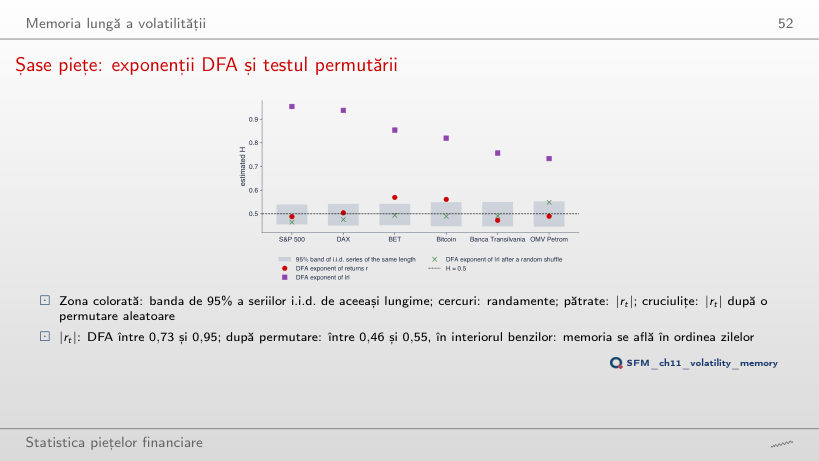
Răspuns
Scade între 0,46 și 0,55, în interiorul benzilor i.i.d.: permutarea păstrează distribuția (deci și cozile groase) și distruge doar ordinea zilelor. Memoria lungă a volatilității se află în ordinea zilelor.
Exponenți Hurst pe ferestre mobile
Exponenți DFA pe ferestre mobile: S&P 500, BET, Bitcoin
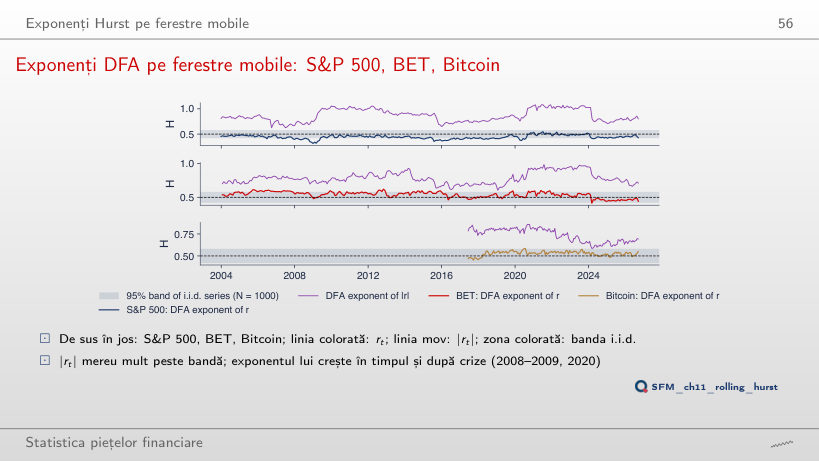
Răspuns
24%, niciuna peste. Minimul, 0,32, este atins la 31 decembrie 2008: inversări zilnice (antipersistență) în panică. Ferestrele consecutive au în comun 979 din 1000 de observații, deci 24% nu înseamnă 65 de rezultate independente.
Memoria lungă și riscul
Scalarea riscului cu h^H
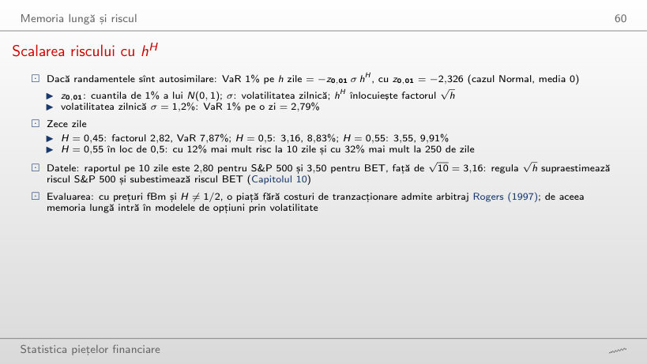
Exemplu lucrat: VaR 1% pe h zile
Răspuns
Cu circa 12%: 9,91% față de 8,83%, pentru că 10^0,55/10^0,5 = 10^0,05 = 1,12. La 250 de zile diferența este 32%. Regula √h supraestimează riscul S&P 500 (raportul pe 10 zile 2,80) și îl subestimează pe cel al BET (3,50).
Randamente logaritmice zilnice, în %: S&P 500, DAX și BET din ianuarie 2000, Bitcoin din septembrie 2014 (7 zile pe săptămînă), Banca Transilvania (TLV) și OMV Petrom (SNP) din 2010, din prețul ajustat, pînă la 18 septembrie 2026; cele două zile greșite ale TLV din mai 2016 sînt eliminate. Prețuri EODHD. Debitul anual al Nilului la Aswan, 1871–1970 (Cobb, 1978; setul de date din statsmodels). Browserul calculează din aceste date scalarea, R/S, DFA, regresia GPH, testul lui Lo, ACF și exponenții pe ferestre mobile. Seriile simulate (fBm, fGn, ARFIMA) și toate estimările Monte Carlo (500 de serii i.i.d. pentru fiecare N, 500 de serii pentru testul lui Lo, 300 pentru memoria aparentă) vin din codul din curs, cu aceleași semințe; browserul calculează din ele mediile, benzile și ratele de respingere. Alte valori ale lui H și d, alte lungimi N, alte lățimi de bandă, alte ferestre, alte praguri ale rupturii Nilului și curbele i.i.d. pentru celelalte cinci serii sînt rulări suplimentare ale aceluiași cod; numărarea cutiilor pe traiectoriile fBm este un calcul suplimentar, care nu este în curs.